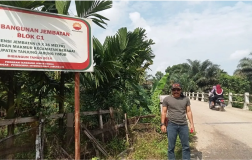

Jembatan Blok C-1 Sukses Tingkatkan Ekonomi Desa Pandan Makmur
Jambi - Warga Desa Pandan Makmur Kecamatan Geragai Kabupaten Tanjung Jabung Timur Melalui kepala Desanya berterimakasih kepada SKK Migas-PetroChina yang telah berkontribusi membangun jembatan penghubung Blok C-1 di depan kantor Desa Pandan Makmur.
Di bangun di era transmigrasi dan kemudian diremajakan kembali oleh SKK Migas-PetroChina , jembatan penghubung Blok C-1 merupakan wujud bantuan CSR di bidang sosial kemasyarakatan
Desa Pandan Makmur Kecamatan Geragai Kabupaten Tanjung Jabung Timur (Tanjabtim) Jambi yang berada di wilayah operasional kerja SKK Migas - PetroChina di kabupaten pesisir timur Provinsi Jambi, sudah tepat dibangun dan diremajakan. Karenanya, jembatan di sana dapat membuat akses seluruh aktivitas warga kembali berjalan normal.
Kepala Desa Pandan Makmur Amsori menyampaikan terima kasih kepada SKK Migas- PetroChina atas dibangunnya Jembatan Blok C-1 pada tahun 2014, yang tidak terlepas dari usulan pemerintah.
"Awalnya kita mengusulkan pembangunan ke pemerintah daerah dan ditembuskan ke PetroChina. Alhamdulillah langsung disetujui pembangunannya," ujar beliau.
Tembusan ini direspon langsung oleh PetroChina dan setelah melalui uji kelayakan dan perhitungan akhirnya perusahaan migas itu merealisasikan pembangunannya pada 2014
Dia mengatakan, jembatan beton yang dibangun PetroChina ini sangat kokoh dan penting keberadaannya untuk masyarakat Desa Pandan Makmur, karena jembatan tersebut menghubungkan beberapa desa sekitar dan pusat ekonomi seperti pasar, lahan pertanian, pendidikan seperti SDN 113, PAUD Gemilang dan SMAN 5 Tanjab Timur, Kantor Desa Pandan Makmur, dan Perpustakaan Desa. Keberadaan jembatan tersebut dapat mengurangi biaya transportasi, efisiensi waktu dan dapat mempersingkat waktu tempuh pada perjalanan darat yang saling terpisah sehingga dapat meningkatkan perekonomian masyarakat.
Pewarta: Nanang Mairiadi
Uploader : Ariyadi
COPYRIGHT © ANTARA 2023